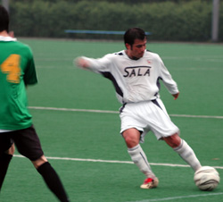

|
Hachioji Park, Sunday 7th May. The story, it is said, is in the telling. So you can probably write this one off as five minutes of your life wasted. How to put into words a thoroughly unemotional, unremarkable and quite damp game of football…?
 Gallagher showed up wearing questionable beads (“They’re nuts!”) of Hawaiian origin, Shigeru decided he couldn’t be bothered playing, and Toby chose the worst day of the season (weather wise) to come and watch. Gallagher showed up wearing questionable beads (“They’re nuts!”) of Hawaiian origin, Shigeru decided he couldn’t be bothered playing, and Toby chose the worst day of the season (weather wise) to come and watch.
Shogun Knights (nee Nova FC) have had quite a time of it of late, losing 8-1 to a merciless BFC and only narrowly losing to champions Hibs. Their squad features a couple of ex-Sala henchmen and games between the two generally lack the bite of certain other fixtures on the TML calendar. Sala were not in the mood to totally extend the hand of friendship however. Olive branches left in the locker room, Sala took to the field with a very unusual line up, knowing that the Swiss are still there to be overhauled, should they slip up.
AJ played in goal, his first TML game since 1974, with Sid opting for a supporting role up front, because he didn’t want his goalie gloves getting wet. Missing three of four high-towers in the form off Clarkey, Steve and Doug, the Sala defense looked a little short on height (geddit?)
An ad-hoc midfield of Andres, Victor, new boy Mikio who impressed at the Tochigi tourney and Jason lined up, with Evan and Yusuke at full back and Guido and Brian G forming an unlikely centre half partnership.
The match was delayed a few minutes at the start when Knights midfielder Scot McScotty was informed that he wouldn’t be allowed to play in jesus sandals, presents from the dalai lama or not. Although the hippy complained briefly, a few minutes of meditation soon sorted him out.
Sala looked bright at the start despite the abysmal weather and created a few half chances, but nothing concrete. Evan and Mikio looked a sharp combination on the left flank, down which most of Sala’s promising moves came, whilst Victor and Andres found little room to maneuver in the middle of the park.
With Shigeru at home in bed (punishment pending) it was left to Charles to hit a few ludicrously wayward shots as way of a warm up.
There was little goal mouth action for most of the first half, save for the odd corner and it was from one of these that Sala finally broke the deadlock.
Brookey’s swirling kick was flicked on and went back out the other side of the box. Mikio pumped it back in and in the confusion Gallagher lashed it home from eight yards. 1v0.
The game tailed off after that, though Knights had a few half chances from through balls and a corner.
Sala’s defense performed admirably throughout the game, with Brian G and Yusuke putting in particularly noteworthy performances.
In the second half, Sala poured on the pressure, but like the previous week against the French, didn’t manage to turn a ridiculous amount of possession into goals. The problem seems to occur around the edge of the opponent’s box; a mysterious line painted there has a zombifying effect on all Sala players and renders them moronic. On the rare occasion when an incisive pass was made, the opportunities were passed up.
Dhugal just failed to chip the keeper from Charles’s through ball and Guido struck the bar (Which has taken a severe beating from Sala in the last two weeks) with a thunderous drive from range.
Mikio also went very close, lifting the ball over the oncoming keeper only to see it roll agonizingly wide.
At the other end AJ had to be smart to close down two one-on-ones, and was a tad fortunate to get away with the second, which rebounded off the striker and went out for a goal kick. Guido was then forced to clear off his own goal line after a penalty box fracas that threatened to boil over into a full blown goal…But Sala survived, a quality that has held them in good stead this season and will hopefully hang around to help out next season too.
The finale saw Sid, Yusuke and Brookey all denied in a full on stramash of epic proportions.
The final whistle blew on the tawdry affair amid strengthening rain and few smiles, but for Sala, as has been the case on so many occasions this year, the average performance was rewarded with three points and a sense that at the end of the day, that’s all that really matters.
Back by popular demand… the man of the match award.
This week’s winner after much thought…
Brian Gallagher: Unbeaten in the air all afternoon long, scored the only goal and lent me money to get the train home.
Honorable mentions… Yusuke and Mikio..
Reporter: Roddy Charles.
|